Estimate Drag and Momentum
We can model the robot's motion using a first-order system, where the velocity response to a step input can be described by an exponential curve. The parameters of this curve can be used to estimate the drag coefficient and momentum of the robot. To perform this estimation, I conducted an experiment where I applied a step input to the robot and recorded its velocity response over time.
$$F = ma = m\ddot{x}$$
We add the linear drag force $(d)$ and motor input $(u)$,
$$F = -d\dot{x} + u$$
Combining the two equations, we can derive that the dynamics of the system can be described in terms of second derivative of position
$$\ddot{x} = -\frac{d}{m}\dot{x} + \frac{u}{m}$$
Then, we can represent the system in state space notation with the state vector
$$x = \begin{bmatrix} x \\ \dot{x} \end{bmatrix}$$
The corresponding dynamics in the state space form $\dot{x} = Ax + Bu$
$$ \begin{bmatrix} \dot{x} \\ \ddot{x} \end{bmatrix} = \begin{bmatrix} 0 & 1 \\ 0 & -d/m \end{bmatrix} \begin{bmatrix} x \\ \dot{x} \end{bmatrix} + \begin{bmatrix} 0 \\ 1/m \end{bmatrix} u $$
For this system, the drag and momentum can be estimated as the following parameters covered in lecture
$$d = \frac{u_{ss}}{\dot{x}_{ss}}$$
$$m = \frac{-d \cdot t_{0.9}}{\ln(1-0.9)}$$
In this process, the robot needed to reach a stable constant-speed state and travel a relatively long distance. Therefore, I switched the ToF sensor to Long Mode. A step input with $( u = 120 )$ was applied at $( t = 0.5 \text{s} )$, and the corresponding distance measurements were collected. After the experiment, the data were transmitted through BLE for further analysis.
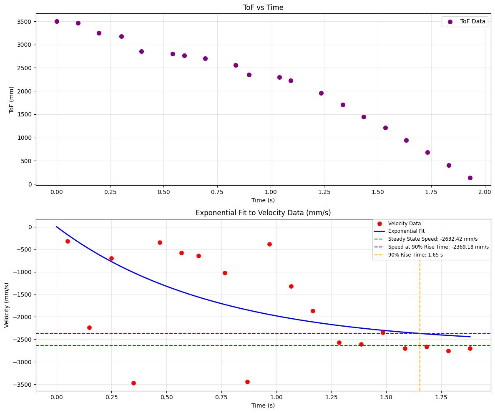
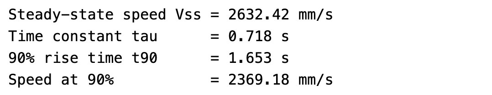
Following the approach from the reference website, I first computed the velocity at each sampled point, then fitted the velocity data with an exponential curve. The steady-state speed was estimated from the later portion of the curve where the response became stable. Based on the time and speed at which the response reached 90% of the steady-state value, I determined the 90% rise time and velocity. Using these values, I calculated the drag coefficient $( d )$ and momentum term $( m )$.
$$d = \frac{u_{ss}}{\dot{x}_{ss}} = \frac{1}{2632.42 mm/s} = 0.00037988$$
$$m = \frac{-d \cdot t_{0.9}}{\ln(1-0.9)} = \frac{-0.00037988 s/mm \cdot 1.653 s}{\ln(0.1)} = 0.00027269$$
Initialize KF (Python)
With the initial parameters estimated, I then implemented the Kalman filter. Based on the system definition, I computed the continuous-time matrices $( A )$ and $( B )$, and used the mean sampling interval $( \text{mean_dt} )$ from the collected data to obtain the discrete-time matrices $( A_d )$ and $( B_d )$.
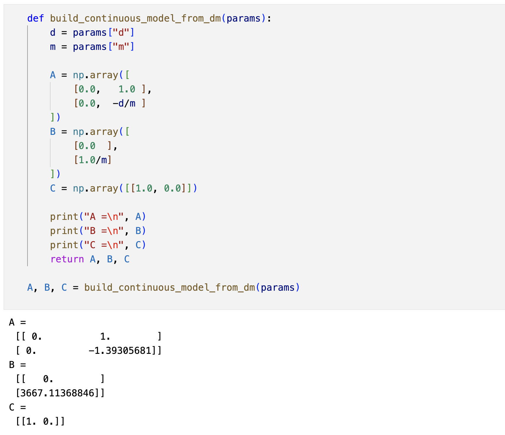
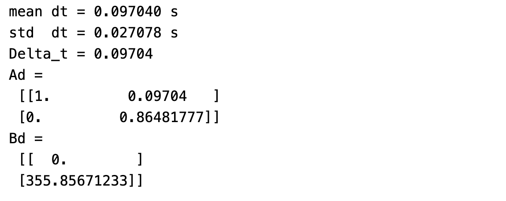
Next, following the formulas provided in the slides and the sampling rate, I calculated $( \sigma_1 )$ and $( \sigma_2 )$, which represent the confidence in the modeled position and velocity, respectively. I also set $( \sigma_3 = 20 )$, and used these values to construct the process noise covariance matrix $( \text{Sigma}\ u )$ and the measurement noise covariance matrix $( \text{Sigma}\ z )$. These were the initial settings, which were further tuned during later experiments.
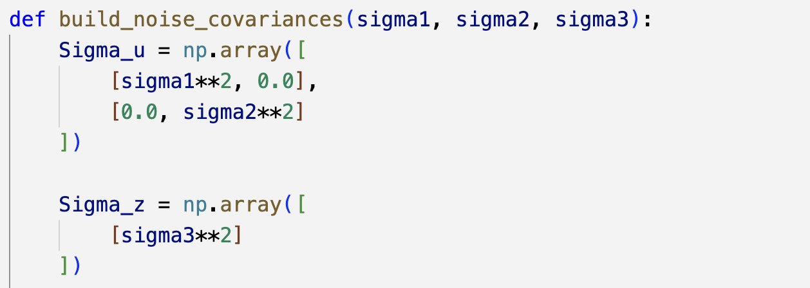
Implement and Test the Kalman Filter in Jupyter (Python)
Based on the full Kalman filter procedure and the lab instructions, I implemented the prediction and update steps in Python. After defining the initial state and covariance, I was able to apply the Kalman filter to the collected experimental data.
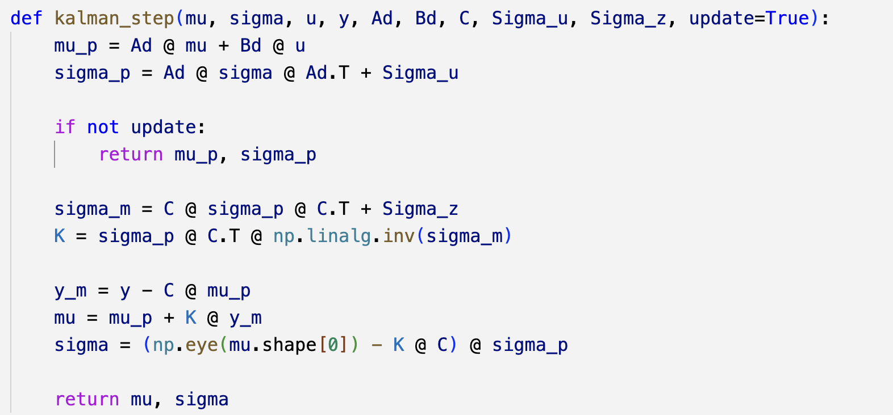
I then tested several different sigma settings and compared the filtered results. The first set of results shown here corresponds to $( \sigma_1 = \sigma_2 = 32 )$, which is computed by $\sqrt{\frac{100}{0.097}} =32$, and $( \sigma_3 = 20 )$. In addition, I also tested more sets of sigma values. The results showed that the filtered curve becomes smoother as the sigma values increase, which indicates that the filter is giving more weight to the model predictions and less weight to the noisy measurements. It is important to find a balance between smoothing and responsiveness when tuning the Kalman filter parameters.
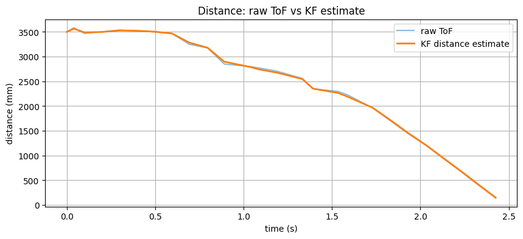
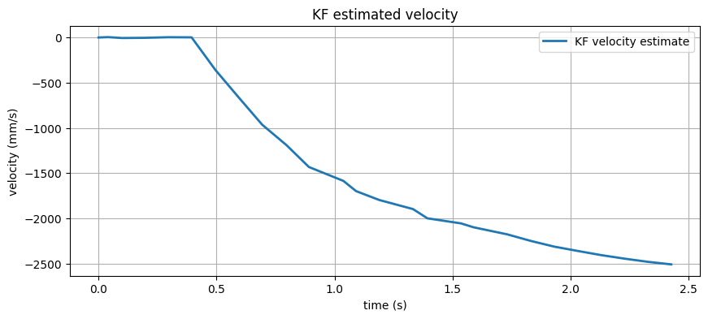
The second set of results corresponds to $( \sigma_1 = 10, \sigma_2 = 20, \sigma_3 = 20 )$
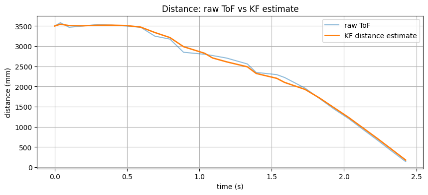
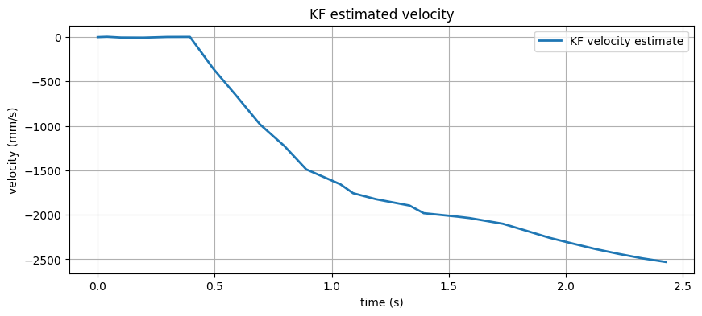
Implement the Kalman Filter on the Robot
After validating the Kalman filter in Python, I integrated it into the Arduino code for PID control on the robot. I defined the matrixes in global variables. Then I apply kalman filter to the distance based on current sensor readings and my input pwm, then use this estimated distance for the rest of the control logic. The other parts are same with the realization in linear PID lab.
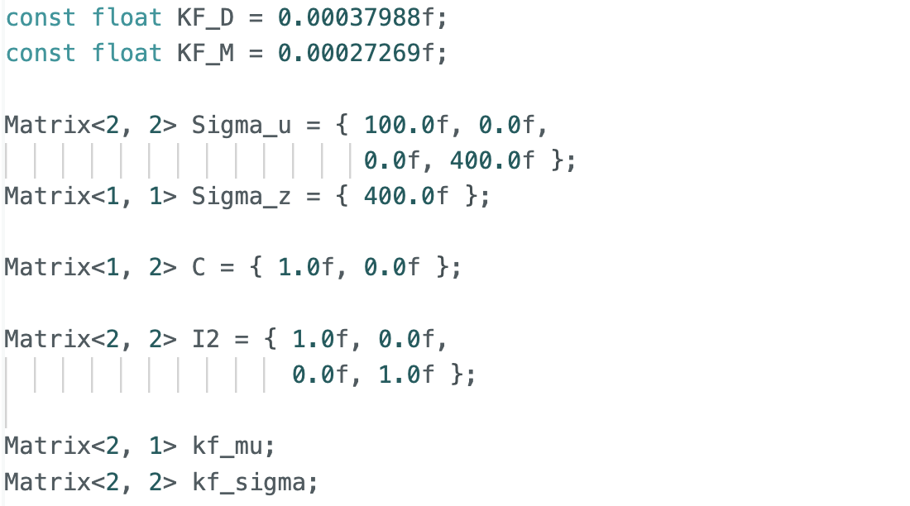
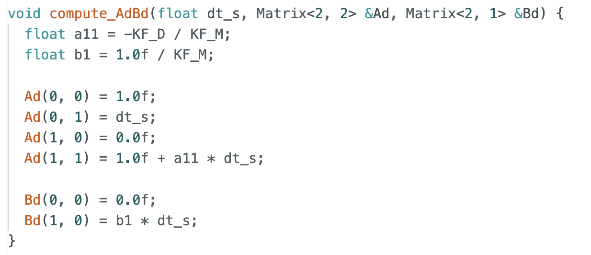
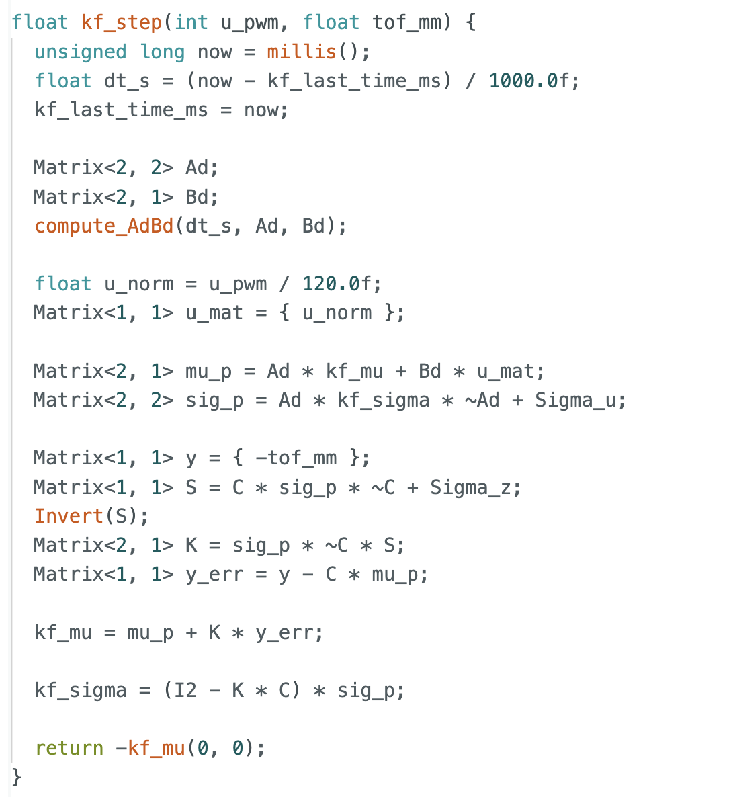
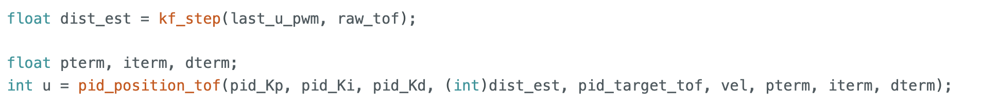
From the resulting plots, it can be seen that the filtered curve becomes much smoother after applying the Kalman filter. In addition, I increased the sampling frequency in Short Mode, which produced more data points. This helped improve the measurement accuracy at short range and provided more precise feedback for control. Moreover, when the robot was too close to the wall, it would miss the data of ToF, but the kalman filter was able to provide a reasonable estimate of the distance based on the previous state and the model.
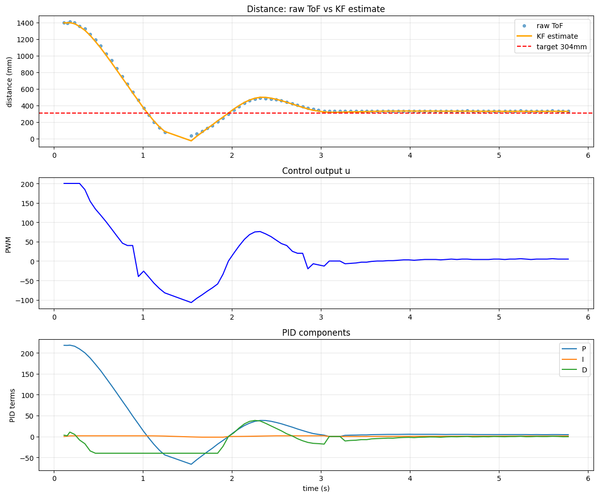
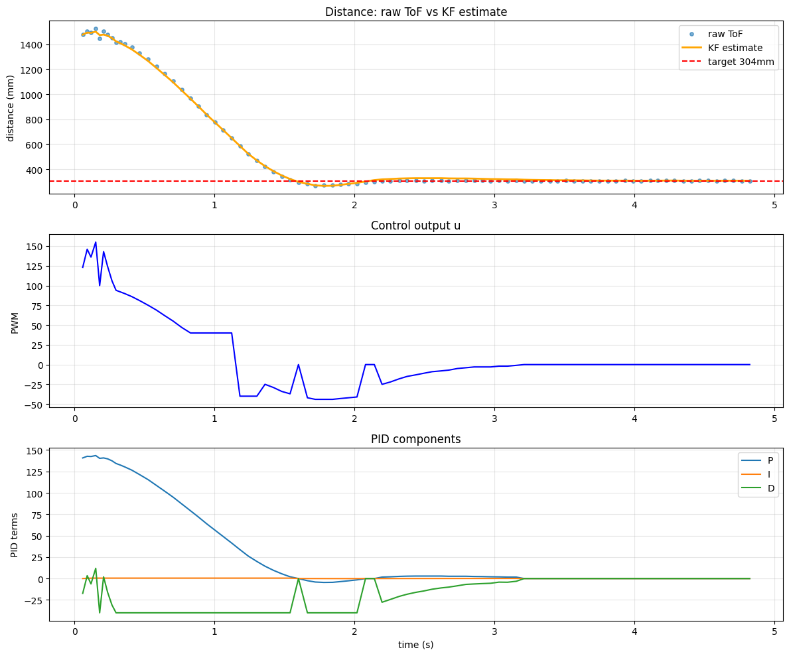
Reference
Thanks to Professor Helbling and the TAs for their help during lab sessions. I refer to Wenyi Fu's and Lucca Correia's websites as guidance and as references for web design. I used Nano Banana Pro to help me with generating the cover of my lab, which is shown in the home page. I used AI tools to help me with refining the writing and improving the clarity of my report.
Note
In the report, I did not put some code implementations of simple functions and roughly duplicate parts. If necessary, please feel free to contact me.